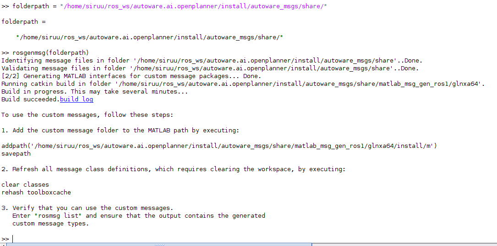
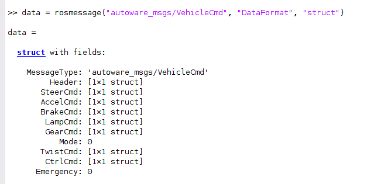
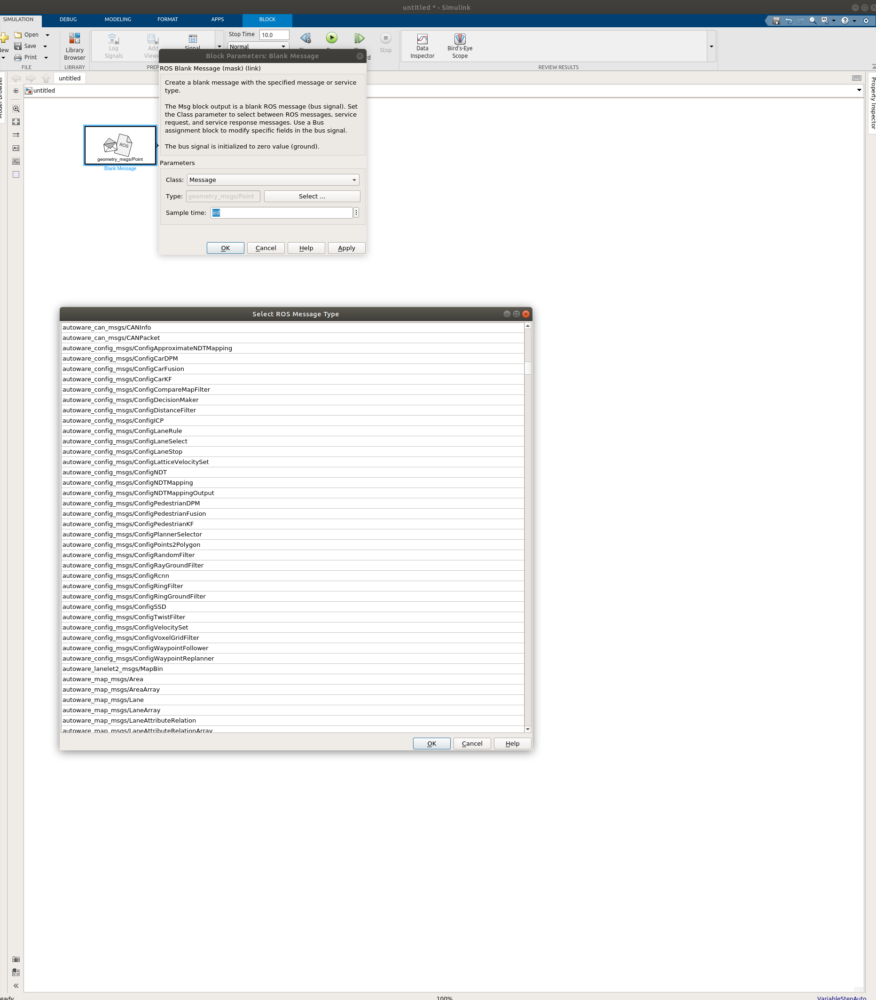
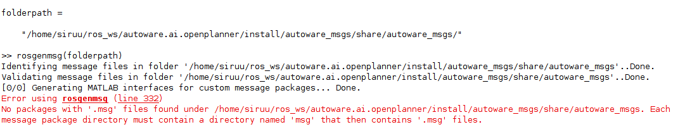
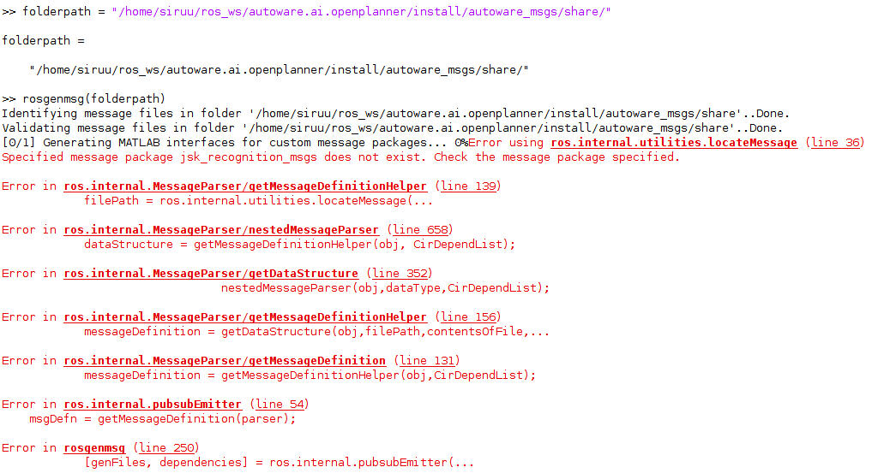
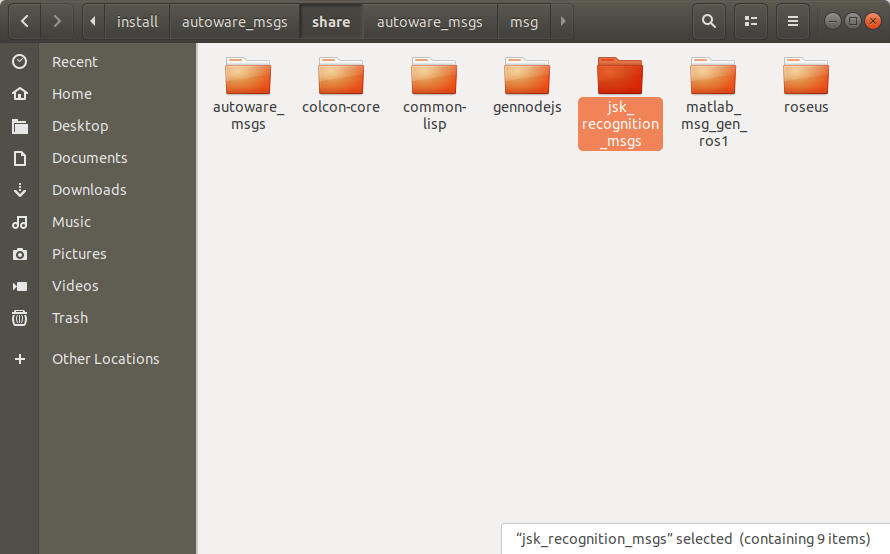

Matlab에 Carla Simulator ROS 사용자 지정 메시지 연동하기
이번 포스트에서는 Matlab ROS Toolbox에 ROS 커스텀 메시지를 연동시키는 방법에 대해 적어보려합니다.
1. ROS 사용자 지정 메시지 빌드
MATLAB ROS Toolbox에 있는 메시지 이외의 커스텀 메시지를 사용하고자 할 때 매트랩의 커맨드 창에 커스텀 메시지 경로를 지정해줍니다.
저는 autoware의 메시지와 연동하는 것을 예시로 하겠습니다.
folderpath = "/home/USER/autoware.ai.openplanner/install/autoware_msgs/share"
커스텀 메시지를 MATLAB ROS Toolbox에서 사용할 수 있도록 rosgenmsg 명령어를 이용하여 메시지를 빌드합니다.
rosgenmsg(folderpath)
아래 그림은 커스텀 메시지를 Matlab ROS Toolbox에 빌드하는 과정을 나타낸 그림입니다.

2. 메시지 빌드 결과
빌드 후 커스텀 메시지가 제대로 빌드되었는지 확인해보겠습니다.
매트랩 커맨드 창에 아래와 같이 입력 및 실행했습니다.
data = rosmesage("autoware_msgs/VehicleCmd", "DataFormat", "struct")

위 사진은 MATLAB에서 실행한 결과입니다.아래 사진으로 Simulink에 커스텀 메시지가 제대로 적용되었음을 확인할 수 있습니다.

3. 발생 가능 문제
Matlab ROS Toolbox 커스텀 메시지 빌드를 하며 겪었던 문제들에 대해 해결했던 방법을 적어보려합니다.
-
CMake 3.15.5 이상의 버전이 설치되어 있어야 합니다.
-
경로가 잘못되었다 하는 경우
커스텀 메시지 빌드를 진행하면서 처음에는 사용하고자 하는 메시지들만 있는 폴더를 선택했었습니다.
하지만 아래 그림과 같이 에러가 발생했습니다.

빌드하고자 하는 메시지 경로를 메시지 패키지 단위로 경로를 수정 후 커스텀 메시지 빌드를 진행했습니다. -
jsk_recognition_msgs 누락
커스텀하고자 하는 메시지 경로 수정 후 다시 빌드를 진행하던 도중, 아래와 같은 에러가 발생했었습니다.

로그를 확인하니,jsk_recognition_msgs가 없어서 생긴 에러였습니다.
jsk_recongition_msgs 패키지를 다운받고 커스텀 메시지 패키지 폴더에 붙여넣습니다.

이렇게 매트랩의 ROS Toolbox에 커스텀 메시지를 적용하는 방법에 대한 포스팅을 마치겠습니다.